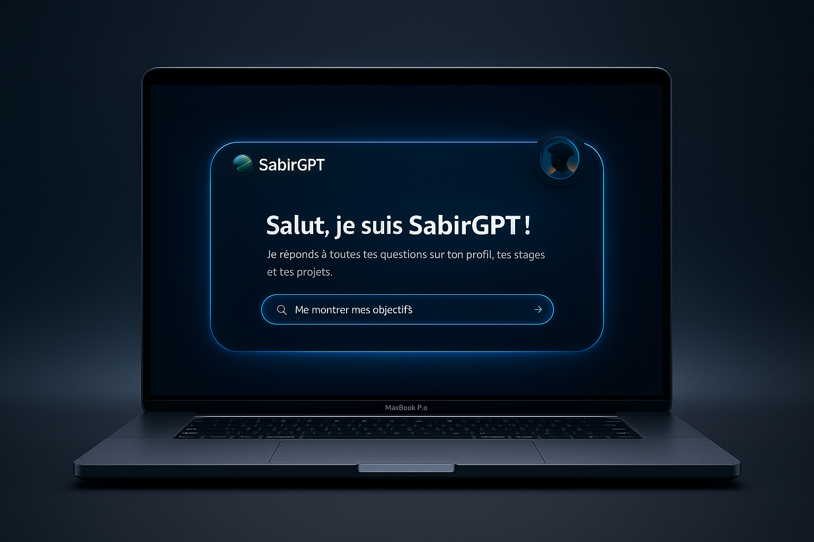
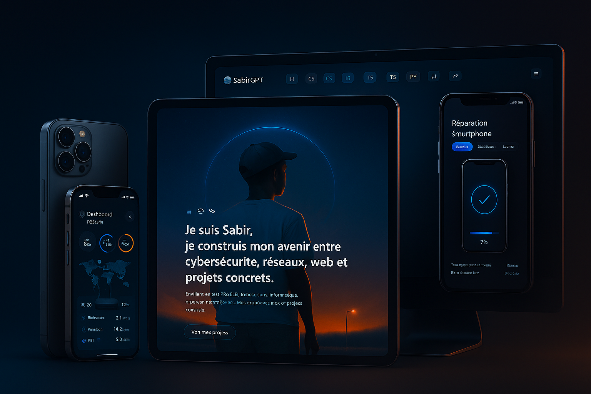

Cybersécurité
Analyse & Protection
Passionné par les réseaux informatiques et la cybersécurité, je suis actuellement en Terminale CIEL (Cybersécurité, Informatique et réseaux, ÉLectronique) où je développe mes compétences techniques en infrastructure réseau et sécurité des systèmes.
Mon parcours m'a permis de maîtriser des outils professionnels comme Cisco Packet Tracer pour la simulation de réseaux complexes, Wireshark pour l'analyse de trafic et la détection d'anomalies, ainsi que les systèmes Linux pour l'administration serveur. Je conçois et déploie des architectures réseau sécurisées incluant VLANs, routage inter-VLAN, DHCP et pare-feu.
Mon objectif est d'intégrer un BTS SIO option SISR (Solutions d'Infrastructure, Systèmes et Réseaux) en alternance pour approfondir mes connaissances et acquérir une expérience professionnelle concrète. Je recherche une entreprise qui me permettra de contribuer à la sécurisation et l'optimisation de ses infrastructures réseau tout en continuant à apprendre auprès de professionnels expérimentés.
Terminale CIEL - Spécialité Réseaux & Cybersécurité
BTS SIO SISR en alternance (rentrée 2025)
Alternance en infrastructure réseau et cybersécurité
Analyse & Protection
Architecture & Routage
Web & Scripts
Site web moderne avec animations 3D (Three.js), chatbot interactif et design responsive. Interface utilisateur soignée avec effets de parallaxe et transitions fluides.

Simulation complète d'une infrastructure réseau d'entreprise avec segmentation VLAN, routage inter-VLAN, serveur DHCP et configuration de sécurité avancée.

Projet d'analyse et de détection d'anomalies réseau utilisant Wireshark. Identification de tentatives d'intrusion, analyse de protocoles et optimisation de la bande passante.
Installation et configuration d'un serveur Linux (Ubuntu Server) avec services web, FTP et sécurisation par pare-feu. Automatisation des tâches avec scripts Bash.
Posez-moi vos questions !
N'hésitez pas à me contacter